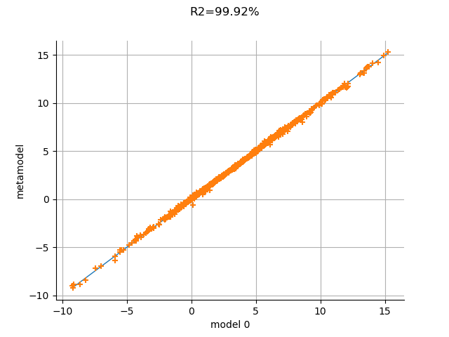

Note
Click here to download the full example code
Validate a polynomial chaos¶
In this example, we show how to perform the draw validation of a polynomial chaos for the Ishigami function.
import openturns as ot
import openturns.viewer as viewer
from matplotlib import pylab as plt
from math import pi
ot.Log.Show(ot.Log.NONE)
Create the Ishigami test function.
ot.RandomGenerator.SetSeed(0)
formula = ['sin(X1) + 7. * sin(X2)^2 + 0.1 * X3^4 * sin(X1)']
input_names = ['X1', 'X2', 'X3']
g = ot.SymbolicFunction(input_names, formula)
Create the probabilistic model
distributionList = [ot.Uniform(-pi, pi)] * 3
distribution = ot.ComposedDistribution(distributionList)
Create a training sample
N = 100
inputTrain = distribution.getSample(N)
outputTrain = g(inputTrain)
Create the chaos.
We could use only the input and output training samples: in this case, the distribution of the input sample is computed by selecting the best distribution that fits the data.
chaosalgo = ot.FunctionalChaosAlgorithm(inputTrain, outputTrain)
Since the input distribution is known in our particular case, we instead create the multivariate basis from the distribution.
multivariateBasis = ot.OrthogonalProductPolynomialFactory(distributionList)
totalDegree = 8
enumfunc = multivariateBasis.getEnumerateFunction()
P = enumfunc.getStrataCumulatedCardinal(totalDegree)
adaptiveStrategy = ot.FixedStrategy(multivariateBasis, P)
selectionAlgorithm = ot.LeastSquaresMetaModelSelectionFactory()
projectionStrategy = ot.LeastSquaresStrategy(inputTrain, outputTrain, selectionAlgorithm)
chaosalgo = ot.FunctionalChaosAlgorithm(inputTrain, outputTrain, distribution, adaptiveStrategy, projectionStrategy)
chaosalgo.run()
result = chaosalgo.getResult()
metamodel = result.getMetaModel()
In order to validate the metamodel, we generate a test sample.
n_valid = 1000
inputTest = distribution.getSample(n_valid)
outputTest = g(inputTest)
val = ot.MetaModelValidation(inputTest, outputTest, metamodel)
Q2 = val.computePredictivityFactor()[0]
Q2
Out:
0.9992361845215688
The Q2 is very close to 1: the metamodel is excellent.
graph = val.drawValidation()
#graph.setLegends([""])
graph.setTitle("Q2=%.2f%%" % (Q2*100))
view = viewer.View(graph)
plt.show()

The metamodel has a good predictivity, since the points are almost on the first diagonal.
Total running time of the script: ( 0 minutes 0.189 seconds)